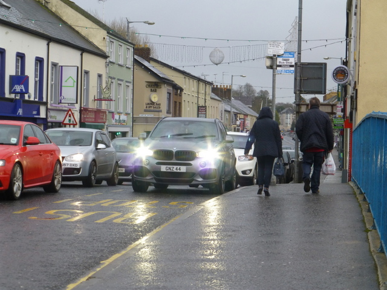

Музыка · 1-бөлім · Дыбыс Music · Section 1 · Sound Музыка · Раздел 1 · Звук
🔊 Музыкалық және шулы дыбыстар
🔊 Musical and Noise Sounds
🔊 Музыкальные и шумовые звуки
Дыбыс — біз еститін тербеліс. Бірақ әр дыбыс музыкалық емес. Sound is a vibration we hear. But not every sound is musical. Звук — это колебания, которые мы слышим. Но не всякий звук музыкальный.
🌊 Дыбыс деген не? 🌊 What Is Sound? 🌊 Что такое звук?
Дене тербелгенде (вибрация) дыбыс пайда болады: ішек, дауыс байламдары, мембрана. Sound is born when a body vibrates: a string, the vocal cords, a membrane. Звук рождается, когда тело колеблется (вибрирует): струна, голосовые связки, мембрана.
Тербеліс ауаға беріледі де, толқын болып таралады. The vibration is passed to the air and spreads as a wave. Колебания передаются воздуху и распространяются как волна.
Толқын құлаққа жетеді — біз дыбысты естиміз. The wave reaches the ear — and we hear the sound. Волна доходит до уха — и мы слышим звук.
💡 Дыбыс көзі әрқашан тербеледі. Тербеліс тоқтаса — дыбыс та жоғалады. 💡 A sound source always vibrates. Stop the vibration — and the sound disappears. 💡 Источник звука всегда колеблется. Прекратятся колебания — исчезнет и звук.
🎻 Музыкалық дыбыс пен 🌪 шу 🎻 Musical Sound vs 🌪 Noise 🎻 Музыкальный звук и 🌪 шум
| БелгісіFeatureПризнак | 🎵 Музыкалық🎵 Musical🎵 Музыкальный | 🌪 Шу🌪 Noise🌪 Шум |
|---|---|---|
| ТербелісVibrationКолебания | периодты, реттелгенperiodic, regularпериодические, упорядоченные | ретсіз, тұрақсызirregular, chaoticбеспорядочные, хаотичные |
| БиіктігіPitchВысота | нақты (бар)definite (yes)определённая (есть) | нақты емес (жоқ)indefinite (no)неопределённая (нет) |
| Нотамен жазуWritten as a noteЗаписать нотой | боладыpossibleможно | болмайдыnot possibleнельзя |
| МысалдарExamplesПримеры | скрипка, флейта, дауысviolin, flute, voiceскрипка, флейта, голос | күн күркірі, сықыр, у-шуthunder, creak, hubbubгром, скрип, шум толпы |
📣 Дыбыс көздері 📣 Sources of Sound 📣 Источники звука
ІшектіStringsСтрунные
🎵ҮрмеліWindДуховые
🎵ДауысVoiceГолос
🎵БарабанDrumБарабан
🌪ТабиғатNatureПрирода
🌪ҚоңырауBellКолокол
🎵

📌 Кейбір аспаптар екеуін де шығарады: барабан мен тарелка — биіктігі жоқ шулы дыбыс, ал литавр мен ксилофон — биіктігі бар музыкалық дыбыс береді. 📌 Some instruments make both: a drum and cymbals give noise (no pitch), while timpani and a xylophone give a musical sound (with pitch). 📌 Некоторые инструменты дают оба вида: барабан и тарелки — шумовой звук без высоты, а литавры и ксилофон — музыкальный звук с высотой.